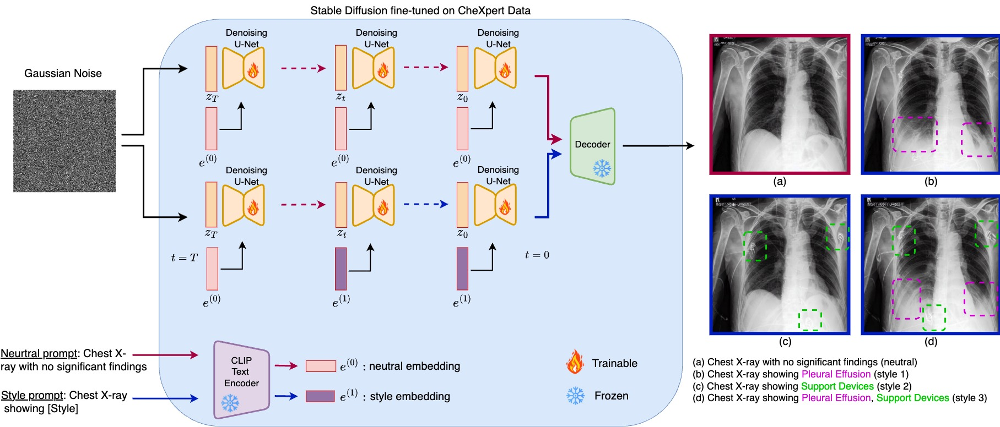
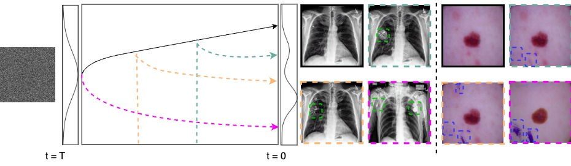
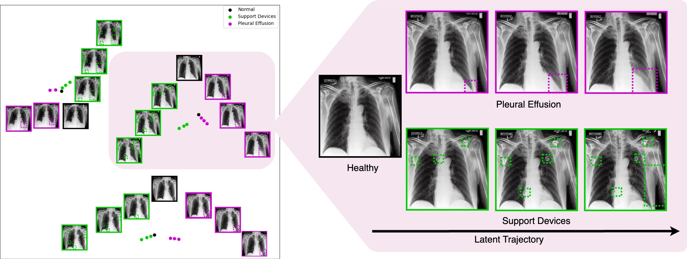
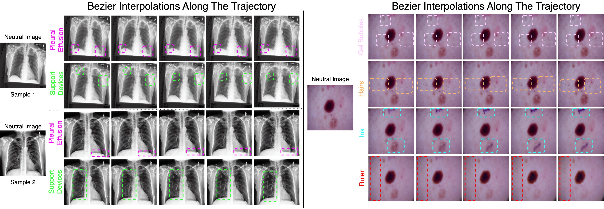

Abstract
Text-to-image diffusion models have demonstrated a remarkable ability to generate photorealistic images from natural language prompts. These high-resolution, language-guided synthesized images are essential for the explainability of disease or exploring causal relationships. However, their potential for disentangling and controlling latent factors of variation in specialized domains like medical imaging remains under-explored. In this work, we present the first investigation of the power of pre-trained vision-language foundation models, once fine-tuned on medical image datasets, to perform latent disentanglement for factorized medical image generation and interpolation. Through extensive experiments on chest X-ray and skin datasets, we illustrate that fine-tuned, language-guided Stable Diffusion inherently learns to factorize key attributes for image generation, such as the patient's anatomical structures or disease diagnostic features. We devise a framework to identify, isolate, and manipulate key attributes through latent space trajectory traversal of generative models, facilitating precise control over medical image synthesis.
Method
Key Contributions
- In this paper, we investigate the disentanglement capabilities of Stable Diffusion Rombach et al. (2022), fine-tuned on medical images.
- We propose the first method to traverse latent space based on language guidance and see the factorizing effect on the resulting images. Interpolation between samples permit continuous trajectories that can be sampled.
- We propose a new metric, Classifier Flip Rate along a Trajectory (CFRT), to validate the presence of the desired disentanglement.

Results



Conclusion
Vision-language foundation models have rich latent representations that can be leveraged in medical imaging, where the data are limited. In this paper, we presented the first text-guided traversal along a non-linear trajectory in the disentangled latent space based on vision-language foundation models for medical images. The qualitative and quantitative results demonstrate that our method enables precise control over the synthesized images (including the interpolated images), allowing for targeted manipulation of visual attributes while preserving content. Future work will investigate ways to impose more structure and compositionality on the latent spaces.
BibTeX
@inproceedings{tehraninasab2025language,
title = {Language-Guided Trajectory Traversal in Disentangled Stable Diffusion Latent Space for Factorized Medical Image Generation},
author = {TehraniNasab, Zahra and Kumar, Amar and Arbel, Tal},
booktitle = {Proceedings of the Mechanistic Interpretability Workshop (MIV) at IEEE/CVF Conference on Computer Vision and Pattern Recognition (CVPR)},
year = {2025},
address = {Nashville, USA},
month = {June},
note = {Proceedings Track}
}